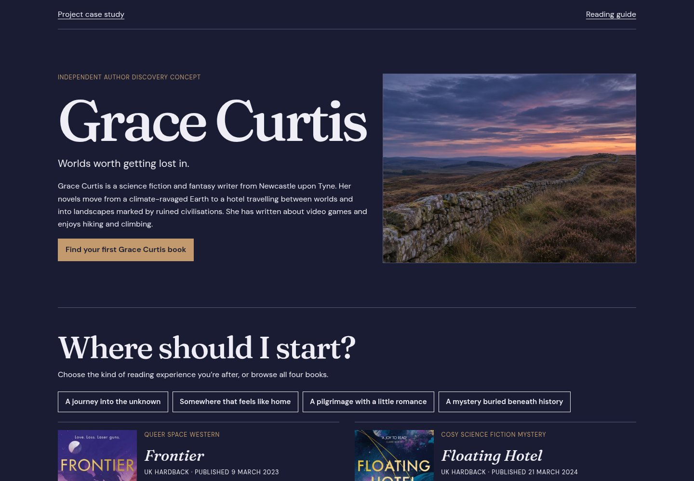
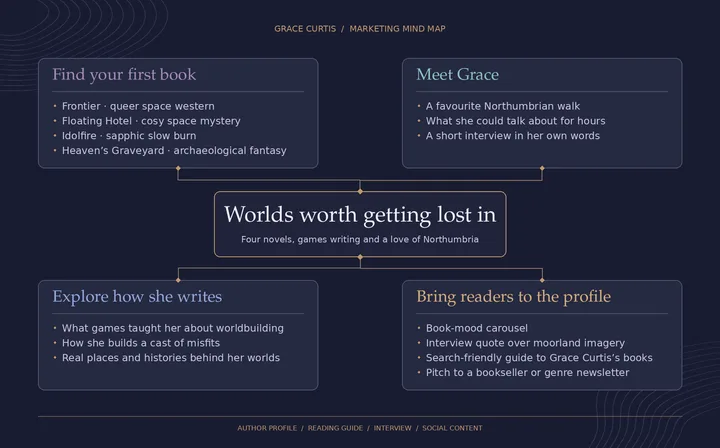
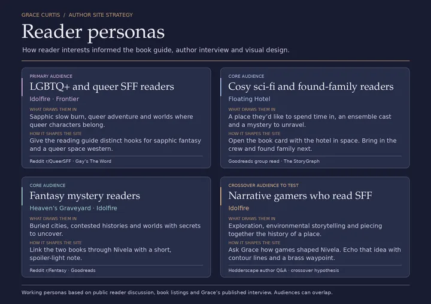

Slide 01 / 06
Which Grace Curtis book should you read first?
Choose by the kind of world you want to spend time in.
Project 02 / Author marketing / Independent concept
An author discovery experience for Grace Curtis.
An independent concept by Mollie Sambrook. An unofficial reader discovery prototype.
Open the reader-facing preview
Grace Curtis writes across overlapping speculative genres. A reader may be drawn to her work before knowing whether to begin with a western, a cosy mystery, a pilgrimage or an archaeological fantasy.
Objective · Help new readers choose a first book and reach its UK publisher page with confidence.
Audience · New and genre-adjacent readers encountering Curtis through bookselling, editorial or social discovery.
Role and scope · Independent research, positioning, copy, creative direction and a static web prototype. The profile and reading guide are built for review. Interviews, audience validation, analytics and campaign distribution are planned.
Four novels, games writing and a love of Northumbria.
Help readers recognise the story they’re in the mood for.
Reader journey · Give readers a route from the reading guide to a publisher’s book page.
Introduce the person behind the novels and the places she knows.
Reader journey · Offer curious readers a reason to keep exploring after choosing a book.
Connect Grace’s creative influences to the worlds in the novels.
Reader journey · Give readers a deeper way into the books through craft and setting.
Plan discovery routes that lead readers to the guide.
Reader journey · Give search visitors and readers arriving from social or newsletters a clear next step.
My proposed positioning connects speculative places with human relationships. The books offer different kinds of travel and discovery, with romance, found family or memory giving readers a reason to care about where the journey leads.
Understanding the different experiences readers seek from speculative fiction helped shape the proposed author profile and book discovery journey.
These working personas reflect preliminary audience hypotheses. The segments can overlap, and discovery channels are research leads.
Primary audience
Core audience
Core audience
Crossover audience to test
Priority and search volumes await verification. For a future Semrush import, retain query, market, date, intent, volume, difficulty, source and proposed destination.
Start with the kind of story the reader wants. Each mood points to a title with a brief reason, while the full bibliography stays available for comparison. A direct publisher link is the next step when a reader is ready.
Building a visual world around the author.
FrauncesWorlds worth getting lost in.
DM SansFour novels. Pick the one you’re in the mood for.
Northumbrian moorland grounds the design in a landscape associated with Grace’s reported interest in hiking. The midnight palette evokes the atmosphere of speculative fiction, while contours and waypoints borrow from exploration maps to guide readers through the profile. These are creative interpretations informed by the brief and Grace’s published discussion of games.
| Insight | Creative response |
|---|---|
| Different genre entry pointsPlanning observation | Proposed mood-based interactive reading guide. |
| Queer speculative readershipAudience hypothesis | Distinct sapphic fantasy and queer adventure hooks. |
| Cosy sci-fi readershipAudience hypothesis | Character-led positioning for Floating Hotel. |
| Fantasy mystery readershipAudience hypothesis | Spoiler-light treatment of settings and histories. |
| Gaming crossoverCrossover hypothesis | Exploration-inspired contour lines, trail and waypoint. |
| Northumbria and hikingAuthor context and creative interpretation | An atmospheric moorland landscape anchors the art direction. |
| Author personalityInterview pending | Proposed original interview in Grace’s own words. |
| Search intentSearch assumptions to test | Descriptive book-discovery content with titles, genres and hooks. |


Proposed title · Grace Curtis | Sci-Fi and Fantasy Author Profile
Proposed description · Explore Grace Curtis’s science fiction and fantasy novels and choose where to start with a mood-based reading guide.
Use descriptive section headings, book-title anchors, cleared cover descriptions and verified publisher links. Connect author intent to the introduction, comparison intent to the guide and title intent to the individual books. The portfolio case study has a canonical URL and a moorland sharing image. The unofficial preview is noindex. The portfolio case study can be indexed if approved and published.
Six designed concept slides for a potential author-discovery campaign.
Slide 01 / 06
Choose by the kind of world you want to spend time in.
Slide 02 / 06
Follow a stranger across an Earth that feels like the edge of the map.

Slide 03 / 06
Check in for a mystery. Stay for the people who keep the place running.

Slide 04 / 06
Take the long road to a city where old gods still have a claim.

Slide 05 / 06
Dig for a legend and find a past that refuses to stay buried.

Slide 06 / 06
Explore all four reading routes in the author profile.
Record version, date, source, device, task or event, denominator and result for future findings. Use observation first, then test copy or ordering changes.

